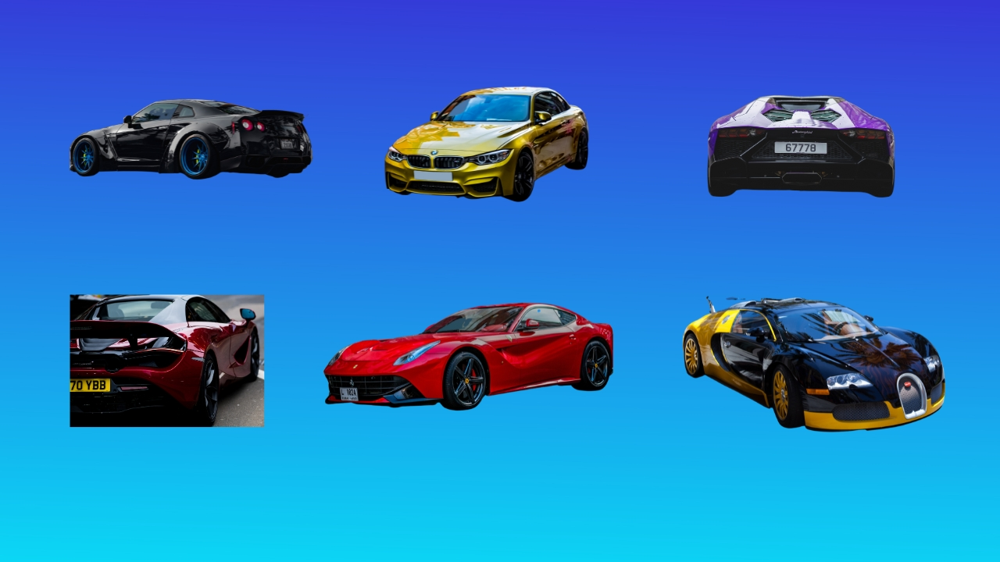
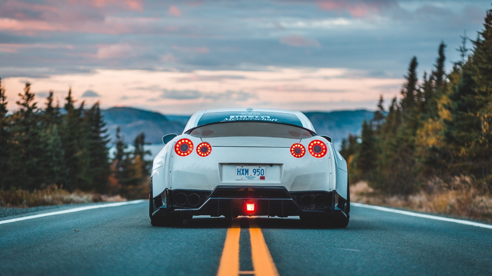
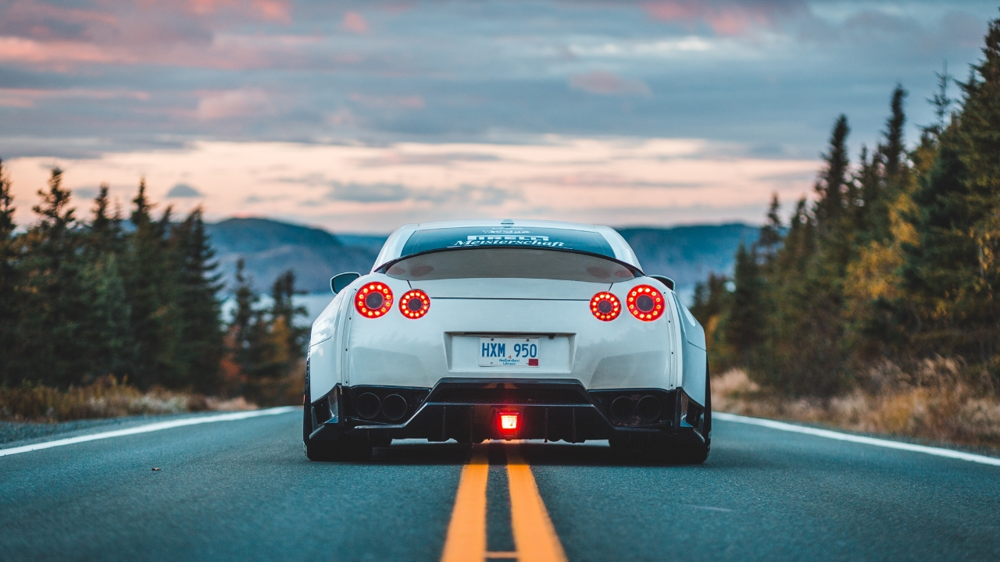

Información
1Origen
Los autos deportivos surgieron en la primera mitad del siglo XX como una evolución de los vehículos de carreras. Fueron diseñados para combinar potencia, velocidad y estilo, ofreciendo una experiencia de conducción emocionante. Desde entonces, se han convertido en símbolos de lujo y rendimiento en la industria automotriz.
2Antecedentes
Los antecedentes de los autos deportivos se remontan al siglo XIX con las primeras carreras de automóviles. Con el avance tecnológico, surgieron modelos más rápidos y potentes en la década de 1920, sentando las bases para los autos deportivos modernos.
3Historia
La historia de los autos deportivos se remonta al siglo XX, con el surgimiento de modelos icónicos como el Bugatti Type 35 y el Alfa Romeo 8C. A lo largo de los años, marcas como Ferrari, Porsche y Lamborghini han dejado su huella, creando vehículos de alto rendimiento y diseño exclusivo que han capturado la imaginación de los amantes de la velocidad y la elegancia.
4Objetivo
El objetivo de los autos deportivos es brindar un rendimiento excepcional, velocidad y emociones intensas a los entusiastas de la conducción.
Deportivos icónicos
Ferrari 250 GTO: Considerado uno de los automóviles más valiosos y deseados del mundo, el Ferrari 250 GTO se produjo entre 1962 y 1964. Con su distintivo diseño y su impresionante desempeño en las carreras, este modelo se ha convertido en un ícono del automovilismo.
Chevrolet Corvette: El Corvette es un símbolo de los automóviles deportivos estadounidenses. Introducido en 1953, ha pasado por varias generaciones y ha cautivado a los entusiastas con su estilo audaz y su potencia impresionante. El Corvette es conocido por su relación calidad-precio y su desempeño de alto nivel.
Ford Mustang: El Mustang es uno de los autos deportivos más emblemáticos de Estados Unidos y se ha convertido en un ícono de la cultura automotriz. Lanzado en 1964, el Mustang popularizó el concepto de los "pony cars" y ha sido un éxito continuo en términos de ventas y presencia en el mercado.
Nissan Skyline GT-R: Conocido como el "Godzilla" en el mundo de los automóviles deportivos, el Skyline GT-R de Nissan se ha ganado un lugar en la cultura popular y en los corazones de los entusiastas del automovilismo. Su combinación de tecnología avanzada y desempeño impresionante lo convierte en un ícono para los fanáticos de los autos japoneses.
Porsche 911: Introducido en 1963, el Porsche 911 se ha mantenido como uno de los autos deportivos más reconocidos y exitosos de todos los tiempos. Con su diseño distintivo de carrocería trasera y motor bóxer, el 911 ha evolucionado a lo largo de los años, pero siempre ha conservado su identidad y espíritu deportivo.
Lamborghini Miura: El Miura, lanzado en 1966, fue un hito para Lamborghini y estableció el estándar para los superdeportivos modernos. Con su diseño revolucionario de motor central y líneas elegantes, el Miura se convirtió en un referente en cuanto a estilo y desempeño.
Jaguar E-Type: Introducido en 1961, el Jaguar E-Type capturó la atención del mundo con su diseño elegante y su rendimiento excepcional. Considerado por muchos como uno de los autos más hermosos jamás fabricados, el E-Type dejó una huella duradera en la industria automotriz.
Toyota Supra: El Supra MKIV, como se le conoce comúnmente, es reconocido por su diseño aerodinámico, líneas suaves y su distintivo alerón trasero. Sin embargo, lo que realmente impulsó su reputación fue su motor de seis cilindros en línea, conocido como el 2JZ-GTE. Este motor turboalimentado era increíblemente robusto y capaz de producir una gran potencia. Muchos entusiastas lo modificaban para obtener aún más rendimiento, lo que llevó al Supra a niveles asombrosos de potencia y velocidad.

Galería
 

Actualidad:
Información reciente
La actualidad de los autos deportivos se caracteriza por avances tecnológicos en rendimiento, electrificación y conducción autónoma. Además, se destacan nuevas versiones de modelos icónicos y un enfoque en la sostenibilidad y eficiencia energética.

TOP AUTOS 2023
| Marca y Modelo | Precio |
|---|---|
| Ferrari 488 Pista | $350,000 |
| Lamborghini Aventador SVJ | $517,770 |
| Porsche 911 GT2 RS | $293,200 |
| McLaren 720S | $299,000 |
| Aston Martin Vantage | $139,000 |
| Chevrolet Corvette ZR1 | $121,000 |
| Mercedes-AMG GT R | $162,900 |
| Audi R8 V10 Plus | $194,400 |
| Nissan GT-R Nismo | $210,740 |
| BMW M5 Competition | $110,000 |
JDM
Japanese Domestic Market(JDM), un término que se ha popularizado en la cultura automotriz para hacer referencia a automóviles, de marcas japonesas como Honda, Toyota, Nissan, Subaru y Mitsubishi. Estos automóviles JDM tienen características únicas, especificaciones especiales, motores de alto rendimiento y detalles de diseño que los diferencian de los modelos vendidos en otros mercados internacionales.
Deportivos más potentes
- Bugatti Chiron Super Sport 300+: Con una potencia de 1,578 caballos de fuerza, el Chiron Super Sport 300+ es uno de los autos más potentes del mundo. Es capaz de alcanzar velocidades extremas y estableció un récord de velocidad de 304.77 mph (490.48 km/h).
- Rimac C_Two: Este superdeportivo eléctrico croata produce una potencia impresionante de 1,914 caballos de fuerza. Con una aceleración de 0 a 60 mph (0 a 97 km/h) en menos de 2 segundos, el C_Two es un verdadero prodigio de la ingeniería.
- Koenigsegg Jesko Absolut: Con un motor V8 biturbo de 5.0 litros, el Jesko Absolut genera una potencia de hasta 1,600 caballos de fuerza. Este hypercar sueco está diseñado para alcanzar altas velocidades y establecer nuevos récords.
- Hennessey Venom F5: El Venom F5 de Hennessey promete una potencia de más de 1,800 caballos de fuerza. Equipado con un motor V8 twin-turbo personalizado, se espera que este hypercar alcance velocidades cercanas a las 311 mph (500 km/h).
- Aston Martin Valkyrie: Desarrollado en colaboración con Red Bull Racing, el Valkyrie cuenta con un motor V12 atmosférico de 6.5 litros que produce alrededor de 1,160 caballos de fuerza. Su diseño aerodinámico y ligero le permiten alcanzar altas velocidades en pista.
- Lamborghini Aventador SVJ: El Aventador SVJ está equipado con un motor V12 de 6.5 litros que genera una potencia de 759 caballos de fuerza. Es capaz de acelerar de 0 a 60 mph (0 a 97 km/h) en apenas 2.8 segundos y alcanzar velocidades superiores a las 217 mph (349 km/h).
- McLaren P1: Con una combinación de motor de gasolina V8 twin-turbo y un sistema híbrido, el McLaren P1 ofrece una potencia total de 903 caballos de fuerza. Su diseño aerodinámico y su tecnología avanzada lo convierten en un automóvil deportivo extremadamente potente.
Deportivos más caros
- Bugatti La Voiture Noire: Este exclusivo superdeportivo de Bugatti tiene un precio de alrededor de $18.7 millones de dólares. Solo se fabricó una unidad y fue inspirado en el legendario Bugatti Type 57 SC Atlantic. Es un verdadero símbolo de lujo y exclusividad.
- Pagani Zonda HP Barchetta: Con un precio estimado de $17.5 millones de dólares, el Zonda HP Barchetta es una obra maestra de Pagani. Con una producción limitada de tres unidades, este automóvil destaca por su diseño elegante y su alto rendimiento.
- Rolls-Royce Sweptail: Aunque el precio exacto no ha sido revelado, se estima que el Sweptail de Rolls-Royce tiene un valor de alrededor de $13 millones de dólares. Es un automóvil personalizado y hecho a medida para un cliente específico, lo que lo convierte en una pieza única.
- Bugatti Centodieci: Este automóvil de edición limitada de Bugatti tiene un precio de aproximadamente $9 millones de dólares. Se fabricarán solo diez unidades, y su diseño rinde homenaje al icónico Bugatti EB110 de los años 90.
- Lamborghini Veneno Roadster: Con un costo de alrededor de $8.3 millones de dólares, el Veneno Roadster es un superdeportivo extremadamente exclusivo. Solo se produjeron nueve unidades, y su diseño agresivo y su potencia impresionante lo convierten en una verdadera joya para los coleccionistas.
- Koenigsegg Jesko: Con un precio que ronda los $3 millones de dólares, el Jesko es uno de los últimos modelos de Koenigsegg. Este hypercar sueco es conocido por su rendimiento sobresaliente y su innovadora tecnología.
- Aston Martin Valkyrie: Con un precio aproximado de $3.2 millones de dólares, el Valkyrie es un automóvil de alto rendimiento desarrollado en colaboración con Red Bull Racing. Su diseño aerodinámico y su tecnología avanzada lo convierten en uno de los deportivos más codiciados del mercado.
Redes Sociales:

Muchos fabricantes de automóviles, revistas especializadas y entusiastas comparten fotos, videos y noticias relacionadas con autos deportivos en Instagram. Puedes seguir cuentas como @supercar, @carlifestyle, @thesupercarsofmiami, entre otros.
Youtube
En YouTube, encontrarás una amplia variedad de canales dedicados a los autos deportivos. Puedes buscar canales como "Top Gear", "Doug DeMuro", "Shmee150" y "TheStraightPipes" para obtener contenido interesante sobre pruebas de autos, revisiones, comparativas y eventos relacionados con los autos deportivos.

En Facebook, puedes unirte a grupos y seguir páginas relacionadas con los autos deportivos. Algunas páginas populares incluyen "Top Gear", "Motor Trend" y "Car Throttle". También puedes buscar grupos específicos para entusiastas de autos deportivos donde se comparte información y se generan discusiones.
En Twitter, puedes seguir a fabricantes de automóviles, periodistas especializados y cuentas de noticias relacionadas con el mundo de los autos deportivos. Algunas cuentas populares incluyen @MotorTrend, @CarandDriver, @JeremyClarkson y @thegrandtour.